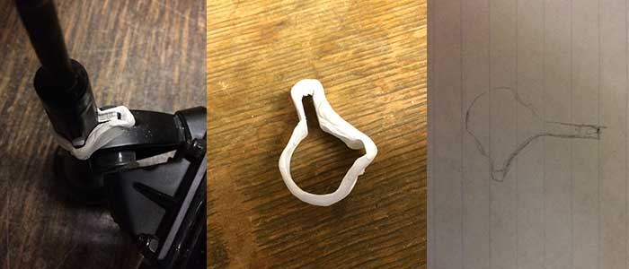
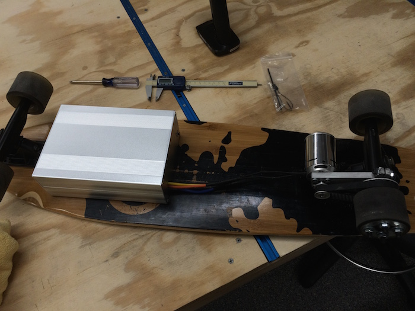

I decided my longboard was collecting too much dust in my room and I should do something cool with it. I decided to motorize one of the back wheels. I order all the components I needed online from a hobbyist website and then began working on creating a motor mount.
Getting the motor mount to fit onto the trucks was the most difficult part because of the irregular shape of the trucks. I ended up getting some air dry modeling clay and wrapped some around the trucks, pealed it off, traced it, then created a CAD form that, which I then put into a waterjet. The result was a pretty spectacular fit. You can see some of that process below.
I went on to modify a case for it to house everything nicely so nothing will get damaged.
